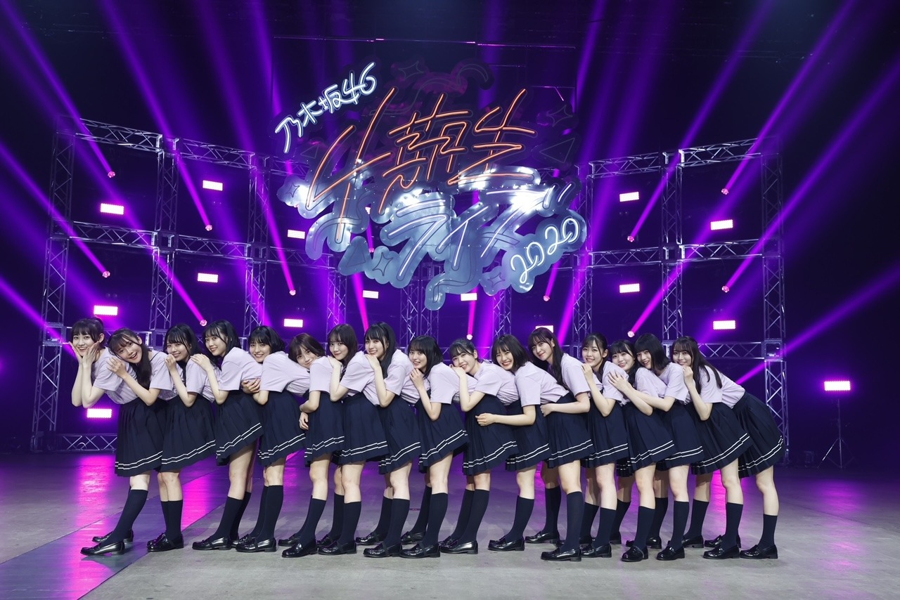
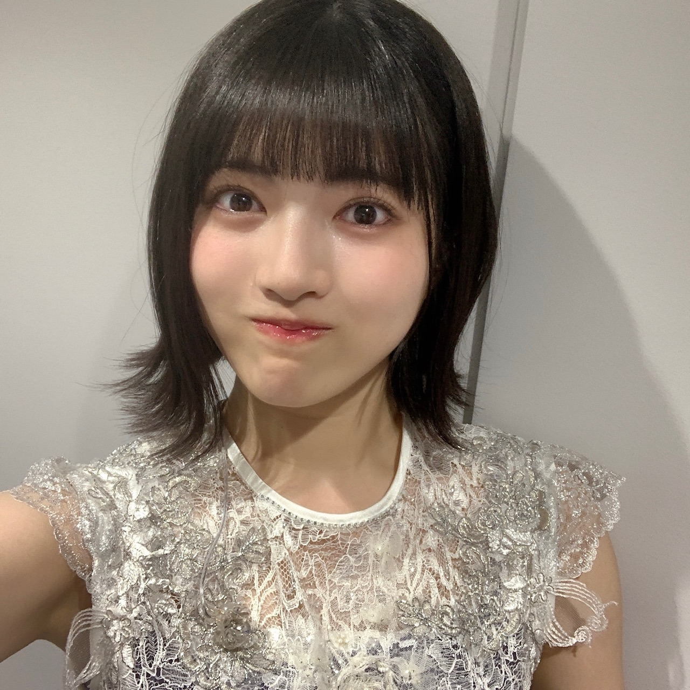

2020/1210Thu自分のことが好きじゃなかった 林瑠奈
乃木坂46 4期生ライブ2020
本当にありがとうございました。
"皆さんに林瑠奈が好きと自信を持って言っていただけるように"
できていたでしょうか。
16人体制となって初めての4期生ライブ。
そりゃ一筋縄では行かないことくらい、言うまでもなく自分でわかっているつもりでした。
でも実際は、わかっているつもりでいただけ。
気づいた時には、前へ上へと、追いつくことに必死で周りが見れなくなっていました。
それでも、『全力で楽しかった』と言えるのはみんなが沢山助けてくれたから。
その感謝を返せるように、より一層励んでいきます。

...........................................................................
ユニットコーナーで、わたしはソロで歌わせていただきました。
「自分のこと」
何度も何度も、再び歩き出す活力をいただいた大切な曲。
ソロをやらさせていただくことをお聞きしたとき、真っ先にこの曲を選曲しました。
緊張と、身体が抱えることのできないくらいの思いが交差して交差して、歌っていたあの瞬間の記憶がありません。
感情のスクランブル交差点です。
たぶん色んなことを考えて、思い出して泣いてしまいそうになっていました。
嘘です、汗ですよ。
でもコールアンドレスポンスのコーナーになって、みんなが良かったよと沢山励ましてくれたのは覚えています。
ライブが終わった後、中元日芽香さんが4期生ライブを見てくださっていたことをお聞きしました。
メッセージもいただきました。
もっともっと頑張ろうと思えました。
サイリウムカラー。
ピンク×ピンクにさせていただいていることの重み。
全神経で感じているこの大切な重みを、これからも背負わせていただきたい。
中元さんの大切にされている曲を、色を
自分なりの力で大切にパフォーマンスさせていただきました。
本当にありがとうございました。
...........................................................................
アンコールでは新しい4期生楽曲を披露させて頂きました。
『Out of the blue』
初めて参加させていただいた4期生楽曲という贔屓目は入ってしまいますが、
曲調、歌詞、振り付けとどこをとっても本当に大好きです。
センターを務めるせいらちゃんには、4期生ライブを通して沢山お世話になりました。
本音を全力で受け止めてくれて、一個一個丁寧に振りを教えてくれたこと、本当に感謝しかないです。
ポジションが近くになることが多かったこともあって、わたしが気づけなかったところまで見てくれていました。
心から信頼したいなと思ったし、大切だなとライブ中に何度も思いました。
本当に本当にせいらちゃんが大好きです
...........................................................................
明日はミュウちゃんです。
ほんまにいっぱいありがとう。
P.S.裏話等々、コラムにも書かせていただきますね。
アディオス！！！！！！！！
誰かの影響受けちゃうなんて。

緊張してませんから！！の顔
をしながらみゆちゃんにぎゅってしてもらいました。
かしこ
コメント(311)
ライブめちゃめちゃ良かったです。
瑠奈ちゃんのソロ聴きました。言葉では言い表せないくらい良かったです。そして、瑠奈ちゃんのことがものすごく好きになりました。これからも、推させていただきます！
質問なのですが、林って森に改名しないのですか？
「自分のこと」を歌ってくれて本当にうれしいです。
全てとは言いませんが、
瑠奈ちゃんの気持ちが沢山伝わりました。
本当にありがとう！
まずは4期生ライブ、お疲れ様でした！！
最初から最後まで本当に最高なライブでした！！
見れたことに感謝しかないです！
そしてソロ曲、個人的にもどストライクの選曲でもうホントありがとうございます(笑)
オーディションのときの「きっかけ」も思い出して涙腺やられました…(笑)
今まで以上に自信持って「自分の推しメンは林瑠奈さんです」って言えるような、そんな時間でした
(映像化or音源化、期待しています←)
今までのの4期生楽曲が16人verに進化していたり16人体制になって最初の曲が披露されたりととにかく見応えしかないライブでした！！
また4期生ライブ見たいと思ったし今度は実際に同じ場所で見れるようになればいいなと思います
感想とにかく伝えたくて日本語おかしくなってるかも…(笑)
ミーグリが始まったら直接伝えようとも思います
これからの4期生、これからの林瑠奈も楽しみにしてるよ！！
自分のことはるなちゃんセレクトだと思った！
SHOWROOM審査の時とか研修生時代とかのこと思い出して号泣だったwww
Twitterでみんなるなちゃん良かったって言ってたよ！
十分自信を持って林瑠奈好きって言えるよ
自信もって！
ミーグリ楽しみにしてるね！
4期生ライブ、おつかれさまです！！！
ライブに出ること自体緊張感があってやっているものだろうに、これに加えてソロで歌わなきゃいけないって緊張するしないのレベルじゃないよねもはや(笑)
選曲がまずよきだったなぁ。
僕もよく聴いていて"自分のこと"に励まされたことが何回もあるけれど、この曲の潜在的なパワーはすごいよね…
しかもひめたんがライブを観ていてメッセージも来てたのね！
また一段と励まされたというか、背中を押されたというか、卒業した今でも偉大な存在です(_ _*)
ーーーーーーーーーー
Out of the blue、贔屓関係なくいい曲よ！(っていうこれが贔屓なのかもしれないけど笑)
I see…みたいな軽快なリズムとか、猫の振り付け？とか4期生らしさが存分に発揮されていて良い！
せいらちゃんがなんだかんだ引っ張ってくれるみたいなことをよく聞いていたから、まさにぴったりな曲だよね！
また曲を聴いたり披露されたりするのが楽しみ！
いかにも緊張してません！って顔(笑)
次回のブログも楽しみにしてるな！(*p'∀'q)
ミッフィーちゃ〜ん(・×・)
林さんのソロは今後のグループのご活躍にも
大切な要素になると確信いたしました。
楽しい時間をありがとうございました！
４期生ライブ、またやって欲しいです。
ほんま言うと、モノローグのところで残るはるなちゃん1人、ユニットのトリ！？
って随分心配したけど、見事に杞憂に終わったよ
1番よく聞くアルバムに収録されている、とても好きな曲を歌ってくれた事に感謝。
ぴっったりの選曲だったね
以前ブログに書いてくれていた事とリンクして、汗ではなく涙が溢れたよ。
ピンク×ピンク
継承できたんじゃないかな。
るなちゃんの個別ライト、ピンクにして振ってたよ!(^^)!
…久々に振ったら筋肉痛に…
それもまた一興。
身長伸びたのおめでとう
自分のこと のイントロが流れ始め瞬時に選曲理由がわかった気がし、歌声に乗ってくる思いをモニター越しで受け取っていました。
林瑠奈が好きって自信はずっとずっと変わらずあります。
今回のライブで林瑠奈が好き！になった人がいっぱい増えてくれる事、それだけを願います。
まじで魅力的だと思った！応援してます！
あとライブの衣裳を着てのドアップ写真、目力が抜群ですね。それと最近顔写真のアップが少なめで寂しいので、今後は増やしてくれると嬉しいかな。
こんばんは。
ライブ良かったです。
自分にとっての目玉のひとつは、林様の自分のことです。
幻と言われていたソロ曲。ほんと良かったです。
自分のことを歌う林瑠奈さん、推せるわ〜笑
ピンク×ピンクのサイリウムカラーばっちり覚えた！
ソロ曲歌うってなってて何歌うのかなーって思ってたけど良かったよー。
確かにピンク×ピンクってひめたんの色だもんね。
そのサイリウムカラーをるなぴが引き継いでって感じやね。
あ、
（ぴんぽーん）
初コメです。改めて四期生ライブお疲れ様でした。
るなちゃんがソロを歌うと聞いてもしかして、サイリウムカラーが、ピンク✖️ピンクと言うことでもしかして❓️
と思っていました❗
「自分のこと」はひめたんのソロですが、色々なタイミングもあり、本人がライブで歌うことがなかった曲です。
そんな曲をまさか四期生ライブで聴けるなんて感動でした❗❗
るなちゃんの引きの画は、時にはなあちゃんっぽくもあり、ななみんの雰囲気もあります❗
とにかく雰囲気がアリアリなのです。
四期生ライブで感じたことは、乃木坂の絆の深さと未来の明るさです❗
そしてるなちゃんは乃木坂の未来のエースに成れると感じました。
これだから乃木坂ファンはやめられません❗♥️
これからも体調に気をつけて頑張ってください❗
元 中元日芽香さん推しとして、『自分のこと』という選曲はとても嬉しく、そして何よりも林瑠奈ちゃんの歌声に感動して涙しました。
これからも、応援させて下さい！
瑠奈〜(*・ω・)ﾉ
ブログ更新ありがとう！
4期生ライブ観たよ！
一言で言うと、
『最高だった!!!!!!!!!!!!!!!!!!!!』
笑
16人での初めての単独ライブ。
新しく入った5人はもちろん、みんな緊張でドキドキだったよね？
でもいざ始まったら、そんな感じは微塵も無くて
一人一人がほんとに楽しそうにパフォーマンスしてたね！(*´ω`*)
選曲も神曲ばかりで、
目を離す隙もないくらいのライブだったよ(o´罒`o)ﾆﾋﾋ
もちろんどの曲も良かったけど、
やっぱり『自分のこと』には感動した。
あんまり瑠奈の歌声マジマジと聞く機会がなかったし、
ソロ曲があるって発表されてからどんな曲歌うんだろうと思ってたけど、
まさかひめたんのソロ曲とはね(๑•̀⌄ｰ́๑)b
サイリウムカラーだけでなく、
王道のアイドル道まっしぐらだね(´^ω^｀)ﾌﾞﾌｫwww
冗談は置いといて、
ほんとに良かったよ！
瑠奈の歌声も雰囲気が歌詞にピッタリだった！(´∀｀*)
アンコールの新曲もすごく良かった！
センターの聖良ちゃん、とても輝いてたね✨✨
4期生16人での作り上げた最高のライブだったよ❗(*･ω･ﾉﾉﾞ☆ﾊﾟﾁﾊﾟﾁ
ホントーにお疲れ様(*´꒳`)_旦
( ๑≧ꇴ≦)ゞｱﾃﾞｭｰ!!!!
4期生単独ライブお疲れ様でした。
ソロで歌った『自分のこと』、とても感動しました。
瑠奈ちゃんは1人で歌っていたけれど、隣に中元日芽香さんがいて、一緒に歌っているみたいでした。
元々、瑠奈ちゃんのことは好きだったけど、更に好きになりました。
コロナの感染者が、日に日に増してきています。
身体に気をつけてくださいね。
ファイティン
4期生ライブを見てまた好きなところが増えました！
またコメントします！
4期生ライブお疲れ様でした。結構目立ってましたね。林の歌声を聴けたのがシンプルに嬉しかったです。自分のこと、感動し過ぎて脳が震えました。サイリウムカラーを同じにしたことが伏線になっていたとは、よもやよもやです。
緊張してませんから！！の顔可愛すぎます。あ、ヤンマガ買いましたバイバイ
4期生ライブ、お疲れ様でしたー。瑠奈ちゃんはソロでしたね。やっぱり緊張しましたか？私の場合、初めて人前で歌を歌ったのが、幼稚園の時童謡「たき火」をソロでで歌った時でした。ものすごく緊張しました。
乃木坂46も持ち曲が200曲以上なので、全部披露するバスラではとても大変です。今回の4期生ライブの経験がのちのライブに役に立つ日がくるでしょう。
ではまた。
LIVEよかった！楽しかった！
したっけね！
ありがとう！
素敵なライブだったよ！
私の眼は 林瑠奈 定点カメラでした 照
ソロ曲... あー緊張した。
観ている こっちが 緊張したわ。
良かったよ！
次のライブは、
瑠奈自身が もっと楽しめますように！！
聖来には 伝えたんだけど、
関西弁で生まれ育ったメンバー、大切にね。
何かあったら、関西弁で吐露しあうんだよ。
瑠奈は瑠奈を好きになる！
YELL
のぎおびでユニットコーナーを発表された時から、ソロ曲で何を歌うのかずっと楽しみでした
そしてユニットコーナーが始まり『自分のこと』のイントロが流れた瞬間、身体中に鳥肌と喜びが一気に出てきました
鳥肌が立った理由は、予想外だったから
喜んだ理由は、ソロ曲の中でもトップクラスに好きな曲だったから
堂々と、でもどこか緊張しながらも歌いきる姿にとても感動しました
ただただかっこよかったです
showroomオーディションの時に語っていた、オーディションを受けた理由
見返すため
それを知っていたから『自分のこと』の歌詞がより響きました
選曲もパフォーマンスも、本当に素晴らしかったです
多分僕は林瑠奈の歌声が大好きなんだと思います
だから新曲の2番の初めの「誰かの影響受けちゃうなんて」の部分、音源解禁されたら何回も聞くと思います
今まで別に自信がなかったわけじゃないし、普通に友達と話してる時にも言ってたことですが、今回のライブを通してよりハッキリ言えます
僕は林瑠奈が好きです
応援したいです
応援させてください
乃木坂46の4期生として入ってくれて、本当にありがとう
ねえ何その自撮り可愛すぎるんだけど！絶対自撮りうまくなったでしょるなぴ！可愛さ増したのもあるけどさ！もう大好き！
ミーグリ私的にいっぱい投げたからもうめちゃたのしみ！あと2ヶ月で会える〜☺️☺️
めちゃめちゃうたうまかった！( ³o³ )！
おもしろいしかわいいだけじゃなくてきいてて「もっときーてたい」ってなる歌声もっててほんと魅力的だなぁすき！
アディオス！！！！！！！！
最後の最後まで見ようか見ようか悩んだけど、4期生ライブ見た！ほんと、最高に良かった！るなぴもりかちゃんもくろみんもみゆちゃんもなおちゃんも2018年から乃木坂に居たかのように4期生に溶け込んでた！4期生ライブで特に私が印象に残ってるのはやっぱり、るなぴのソロかな。きっとものすごく緊張してたんだと思うけどすごく堂々として見えたよ！るなぴすごく歌が上手だな～って思った！4期生の中で１番上手だと思う、声も出てるし透き通る声で私はすごくるなぴの歌声好き
今はまだ予定が分からないからミーグリ取れて無いんだけど、予定が空いてたらミーグリ取るね！！本当は直接会いたいけど我慢…(;-;)
最後に、
私は林瑠奈が好き。と、自信を持って周りのオタクに言いまくりたいと思う！(前から言ってたけど笑)だって、るなぴは私の誇れる推しメンだから！！
次のブログも楽しみにしてる！
ばーいばいっ！
林のソロを聴いていて、今後の林の活躍が少し想像できたと思います。
また歌うような機会があれば、次こそは生で聴きたいです。
お疲れ様でした。
良かったよ、感動をありがとう。
4期生ライブお疲れ様でした！
まさかまさかのソロでのパフォーマンス
発表された時からこちらも緊張していました。
そして迎えた本番、曲が分かった瞬間今回のライブへの
想いが伝わってきました。真っ直ぐな歌声で聴いていて
心地良く、一瞬で終わったような感覚でした。
緊張しているのが分からないくらい、素敵な歌声でした。
そして今回披露された新曲、16人での曲ですね。
僕も一度パフォーマンスを見ただけで好きになりました！
皆さんにとっても大切な曲だと思います。
4期生として真のスタートを切った瞬間を目にすることが
出来たこと、誇りに思います！
ずっと大好きです！それでは、また！
とてもとても大好きな曲です
立ち止まりながらも前を向く。心強いメッセージですね。
自分のことを大切に頑張ってくださいね！
あまりに感動して４期生みんなにコメントしてます！
ひめたんの曲を選曲したのは林ちゃん自身だと知って、すごく嬉しかった〜。ひめたんが見てくれていたのを知って、これまた嬉しかった〜。
ほんまにエモエモやったわ〜。
ライブ中はアイドルスイッチ入れて気合入ってるなぁって見てました。パフォーマンスも良くて、文才もあって、おまけに可愛くて！最高かよって感じです、これからも期待してます！
ライブに映る4期生は自分が乃木坂を好きになった姿そのものでした！
本当に素敵な時間をありがとうございました！
林瑠奈さん、ありがとう。ソロでの歌唱とても素敵で光ってました。
４期生16人みんなが光ってました。素敵な時間をありがとう！
乃木坂46、44人での輝きを期待して、これからも応援しております！٩( ᐛ )و
林瑠奈しか勝たんってなりました
頑張ってる姿見て僕も頑張ろうってなれました
好き止まらんけど！？！？ってなりました
４期生ライブ見たよ～！
最初から最後までずっと楽しめた
林瑠奈が好きって自信を持って言えるよ！！
ユニットコーナーでの「自分のこと」最初声上ずってたかなって思ったけど、いい声だなって思った！すごい良かったよ！！緊張するのに最後まで歌いきって凄いと思う。
LIVEお疲れ様！
愛媛県在住 中３女子 れいちゃんずより
追伸：今日も一日お疲れ様！
この曲をライブで聞いて感動したのは2回目だな。
ひめたんの幻の曲をさゆ、はやしと歌い継いでいるとこに、時間の流れとともに、乃木坂の深さを感じざるを得ない。
素敵な歌声を有難う！
ざいました。
コロナ禍でイベントが少ない中、飛びっ
きりのｆｕｎを届けてもらいました。
るなちゃんでも自分を見失うような過酷
な準備だったんですね。
本当にありがとう。
ソロ、よかったなぁ。ほんとに緊張して
た？
汗です？でも冷静に全体を見渡せるメン
バーも必要だからね。
せーらちゃんの優しさ、感動ものだね。
アディオス
4期生ライブほんとに見たかった。高3の私を恨みます。
今度はピンク×ピンクのサイリウム全力で振れるように、
受験勉強死ぬ気で頑張ります！応援して頂きたいです。
質問「信じれば夢は叶いますか？」
るなぴがどんな風に考えてるか知りたい。
そんじゃ今回はこの辺でアディオス！！アディオス！！！
(大事なので2回言いました。夜明けまでもう少し。もう前しか向かない。)
「自分のこと」めっちゃよかった！！
レイちゃんが最後らへんで泣いちゃったとき私もつられちゃいました。
4期生さんみんなのライブへの思いというか、ファンへの思いがとても伝わってきました！
本当に素敵な時間をありがとう
最高でした！！るなぴさんのパジャマかわいかった～似合ってましたよ！
歯磨きトークも個人的にすごく好きでした(笑)私はスッキリするので歯磨き好きですよ。
4番目の光から、図書室の君へに入るときの沙耶香さんの「君を好きになって」がめっちゃかわいかったですね！
声かわいい～と思いながら見てました。
○つ
【意味】「傷跡・かさぶた」という意味。「かさっつー」という場合もあるそうです。
【発祥】熊本県
【品詞】名詞
来週もお楽しみに
4期生ライブ大成功おめでとう！自分のこと、一人で大きな声でしっかりと歌う姿がとても印象的でした。かなり練習したのがわかりました。とてもうまかったよ。
ロマンティックいか焼きも楽しい曲ですが、瑠奈ちゃんの可愛らしさが光っていました。笑顔が素敵だったよ。
ミーグリとれたので、ミーグリでもこの感動をじっくり伝えます。お疲れ様でした。
これからも頑張ってください。ずっと応援します。
コメントする

PROFILE
新4期生リレー
202104
| SUN | MON | TUE | WED | THU | FRI | SAT |
|---|---|---|---|---|---|---|
| 1 | 2 | 3 | ||||
| 4 | 5 | 6 | 7 | 8 | 9 | 10 |
| 11 | 12 | 13 | 14 | 15 | 16 | 17 |
| 18 | 19 | 20 | 21 | 22 | 23 | 24 |
| 25 | 26 | 27 | 28 | 29 | 30 | |

これからも無理をせずに頑張ってね！